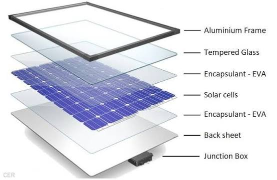

Solar Array
Plan the generation capacity and array layout.
Explore grid-connected solar planning for suitable ground-mounted and large-scale solar applications.

CONCEPT RAYS ENERGY • FUTURE ENERGYGrid-connected projects combine solar generation with electrical infrastructure and require coordinated technical planning.
Grid-connected solar projects bring together generation, electrical systems and site infrastructure.
Plan the generation capacity and array layout.
Coordinate electrical components and integration.
Plan suitable grid interconnection requirements.
Consider operational monitoring requirements.
Plan suitable electrical protection measures.
Support long-term operation and maintenance.
Multiple technical layers are considered through the project lifecycle.
Review site and grid-related conditions.
Plan array and electrical configuration.
Define project scope and requirements.
Coordinate installation and site work.
Complete required grid integration work.
Plan operational support.
Talk to Concept Rays Energy about a solution designed around your property and project requirements.